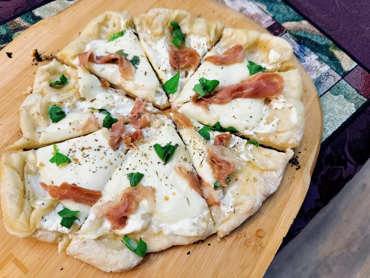

Pizza-Bianca-with-Prosciutto
Description
Grilling pizza allows for a beautiful crisp crust, and this pizza bianca with mozzarella and prosciutto will also be
finished before most pizzerias could deliver.
Ingredients
- 1 pound prepared pizza dough
- 2 teaspoons olive oil
- 1/3 cup ricotta cheese
- 1/2 teaspoon Italian seasoning
- 1 pinch salt
- 6 (2 ounce) pieces fresh mozzarella
- 3 slices prosciutto, roughly torn
- 2 large basil leaves, roughly torn
Directions
Step 1
Preheat a gas grill with all burners on High for 10 to 15 minutes.
Step 2
Shape pizza dough into an 8 to 10-inch disc. Brush dough with olive oil.
Step 3
Reduce the flame on half the grill burners to Low, to create areas of direct and indirect heat.
Step 4
Carefully place dough onto the grill over direct heat. Close the cover. Grill dough until bottom is just barely cooked
and shows char marks, 1 to 3 minutes.
Step 5
Turn crust ninety degrees (do not flip dough over). Grill until crust shows light grill marks, 1 to 3 minutes.
Step 6
Carefully remove par-grilled dough from the grill. Spread ricotta over dough; sprinkle with salt and Italian seasoning.
Place cheese on top, add prosciutto evenly over cheese.
Step 7
Return pizza to the grill over indirect heat; grill until cheese is melted, about 3 minutes. Carefully remove pizza from
the grill.
Step 8
Preheat the oven’s broiler.
Step 9
Broil pizza until cheese is golden, about 5 minutes. Sprinkle torn basil on top of pizza. Allow pizza to rest for a few
minutes before cutting into wedges.